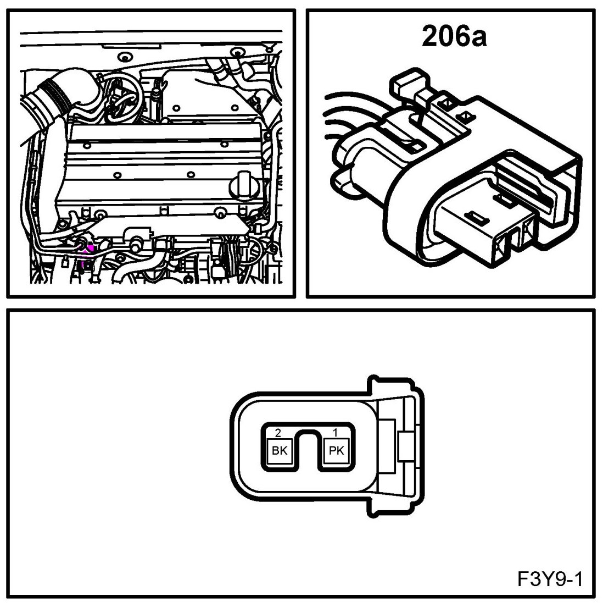
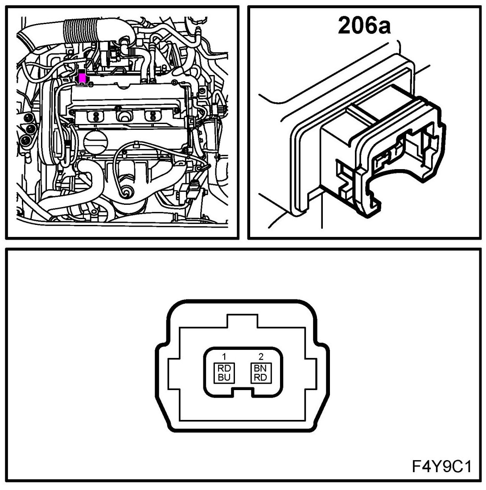
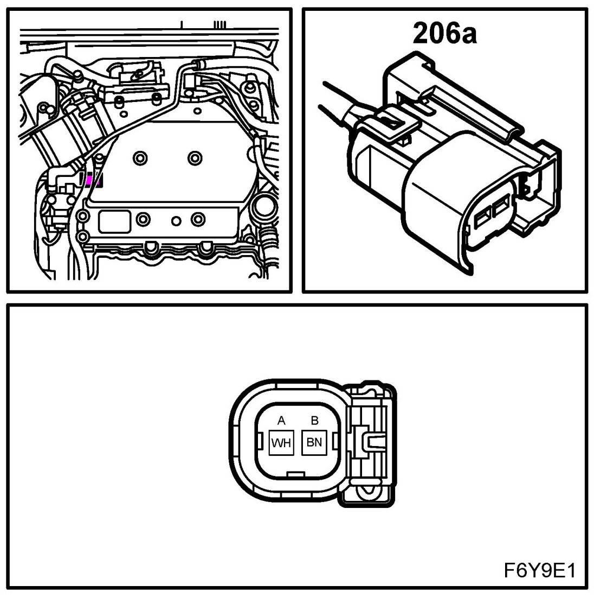
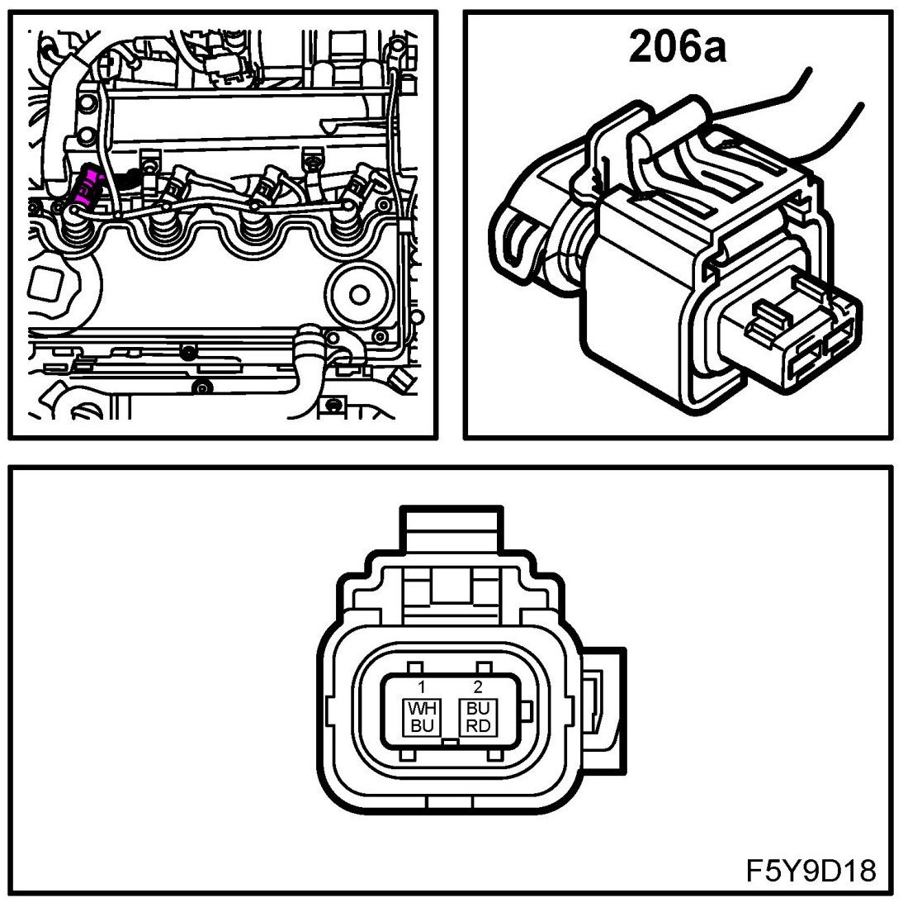
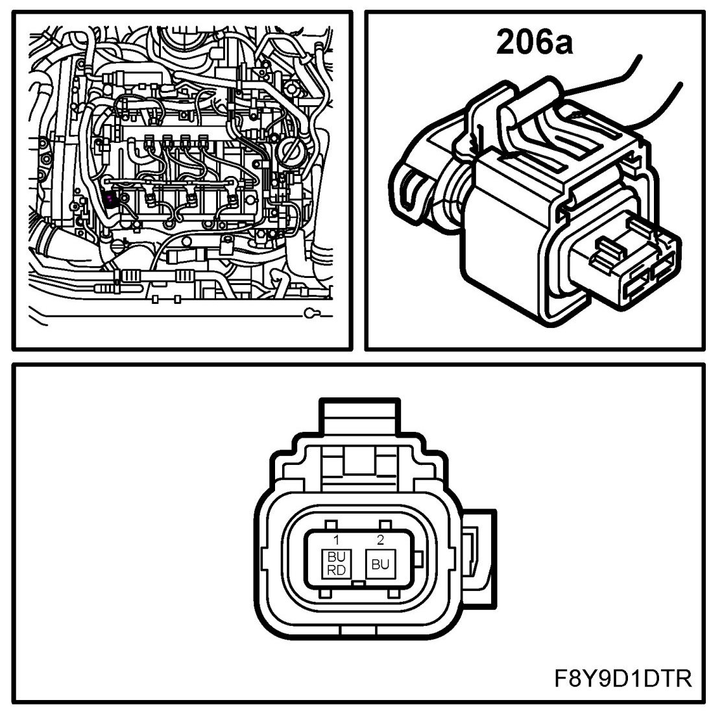

Injector, Cyl 1 (206a)
Injector, Cyl 1 (206a)
Location:
B207
on top of intake manifold

Z18XE
under the cable duct

B284
on rear cylinder bank near belt circuit side

Z19DT
on top of engine

Z19DTH
on top of engine
Z19DTR
on top of engine
